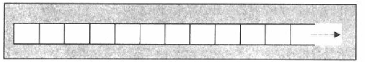
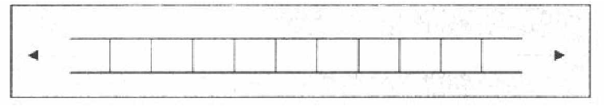
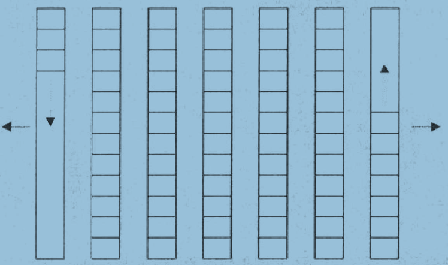
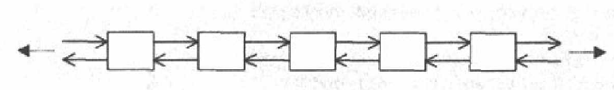
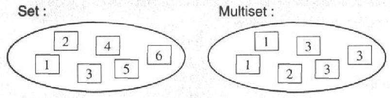
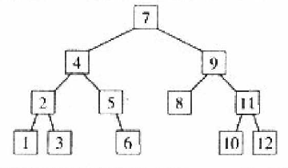
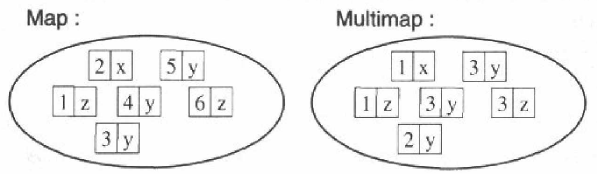
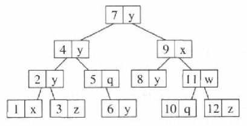

所有容器的方法
所有容器都包含一个default构造和 copy构造 和 析构 函数 begin() 返回一个迭代器，指向起点（第一个元素） end() 返回一个迭代器，指向结束点（最后一个元素的后面） ++ != contype c 产生一个空容器 contype c(c1) 产生一个同型容器 contype c(beg,end) 产生容器初始值为[beg,end)区间元素 c.~contype() 删除所有元素释放内存 c.size() 返回容器元素数量 c.empty() 判断容器是否为空 c.max_size() 返回元素最大可能数量 c1==c2 c1!=c2 c1<c2 c1>c2 c1<=c2 c1>=c2 c1=c2 将c2所有元素赋值给c1 c1.swap(c2) 交换c1 c2 swap(c1,c2) 交换c1 c2 c.begin() 返回迭代器 指向第一个元素 c.end() 返回迭代器 指向最后一个元素的下一个位置 c.rbegin() c.rend() c.insert(pos,elem) 将elem的副本安插于pos处 e.erase(beg,end) 移除区间内元素[beg,end) c.clear() 移除所有元素 c.get_allocator() 返回容器内存模型
注意
= 操作 将会把右值容器数据全部删除 且效率比 swap 慢(swap只交换内部一些指针罢)
vector
#include <vector> 以动态模拟一个向量数组 提供随机访问 迭代器支持+n -n 
方法
vector<Elem> c 构造一个空 vector vector<Elem> c1(c2) 产生一个c2的副本 vector<Elem> c(n) 用default构造函数产生一个大小为n的vector vector<Elem> c(n,elem) 产生一个大小为n的vector 每个元素值=elem vcetor<Elem> c(begin,end) 产生一个vector 初值为区间[begin,end) c.~vector<Elem>() 销毁所有元素 释放内存 c.size() c.empty() c.max_size() c.capacity() 返回重新肥胖空间前可容纳元素最大值 c.reserve(n) 增大空间到可容纳n给元素 不能缩小 == != !(=) < > <= !(<) >= !(>) c1=c2 c.assign(n,elem) 将容器内容替换为n个elem c.assign(begin,end) ....[begin,end) c1.swap(c2) swap(c1,c2) //全局函数 c.at(index) //或检查索引有效值 c[index] c.front() //也不会检查元素是否存在 其他容器也是 c.back() //同上 c.begin() c.end() c.rbegin() c.rend() c.insert(pos,elem) c.insert(pos,n,elem) c.insert(pos,begin,end) c.push_back(elem) c.pop_back() //也不会检查元素是否存在 其他容器也是 c.erase(pos) c.erase(begin,end) c.resize(n) //将元素实力改为n 后面的删除 多出的元素以default构造 c.resize(n,elem) //同上 多出元素是elem的副本 c.clear()
特例 bool
STL对 std::vector<bool> 进行了特例化 其每个元素以bit表示 且提供了对位的取反操作 相当于动态大小的bit 若需要静态大小bit应该使用bitset
特例方法
c.flip() 所有bool取反 c[index].flip() 指定为取反 c[index]=val c[i]=c[j]
deque
#include <deque> 以动态模拟一个数组 接口基本同vector 但头尾都开放 提供随机访问 迭代器支持+n -n 逻辑结构  内存结构(位于不同内存块) 
方法
c.push_front(elem) c.pop_front() 其他同vector
list
#include <list> 一个双向链表 
方法
list<Elem> c list<Elem> c1(c2) list<Elem> c(n) list<Elem> c(n,elem) list<Elem> c(begin,end) c.!list<Elem>() c.size() c.empty() c.max_size() == != < > <= >= c1=c2 c.assign(n,elem) c.assign(beg,end) c1.swap(c2) swap(c1,c2) c.front() c.back() c.begin() c.end() c.rbegin() c.rend() c.insert(iter,elem) c.insert(iter,n,elem) c.insert(iter,begin,end) c.push_back() c.pop_back() c.push_front(elem) c.pop_front() c.remove(val) //移除所有值为val的元素 c.remove_if(op) //移除造成 op(elem)结果为true的元素 c.erase(iter) c.erase(begin,end) c.resize(n) c.resize(n,elem) c.clear() c.unique() //存在若干相邻元素值相等 移除之 只保留一个 c.unique(op) //存在若干相邻元素 使op(elem) 返回true 移除之 只保留一个 c1.splice(iter,c2) //将容器c2 安插到c1 c1.splice(iter,c2,c2iter) //容器c2内c2iter所指元素（1个）安插到c1 c.sort() //以operator<排序 c.sort(op) //以bool op(elem1,elem2)排序 cl.merger(c2) //在c1 c2都已排序情况下 将c2安插到c1 并保证已序 c1.merge(c2,op) //同上 不过以bool op(elem1,emem2) 排序 c.reverse() 所有元素反序
set multiset
#include <set> set multiset或根据排序准则将元素自动排序(以平衡叉树实现) set不允许按入重复值 multiset允许  内存结构 
声明
template<class T,
class Compare=less<T>,
class Allocator=allocator<T> >
class set;
less<T> 是默认排序准则 一个仿函数 以 operator< 比较
排序准则
1 反对称 若x<y为真 则y<x必须为假 若op(x,y)为真 则op(y,x)必须为假 2 可传递 若 x<y y<z 为真 则x<z为真 ...op... 3 非自反 x<x 必为假 ...op...
注意
因为元素有序列 故不提供直接修改元素之的方法(修改可能打破有序) 若要修改需先删除再插入
方法
set c set c(op) //暂时不解其用法 似乎是vs下未支持 以op为排序准则 set c1(c2) set c(begin,end) set c(begin,end,op) //... c.~set() c.size() c.empty() c.max_size() c1==c2 c1!=c2 c1<c2 c1>c2 c1<=c2 c1>c2 c.count(elem) //返回元素值为 elem 的元素个数 c.find(elem) //返回找到的第一个值为elem的元素 iter 未找到 返回 c.end() c.lower_bound(elem) //返回第一个可安插位置 既 元素值 >=elem 的第一个元素位置 c.upper_bound(elem) //...最后一个...> equal_range(elem) //返回eem可安插的第一个和最后一个位置 既 元素值==elem 的元素区间 c.begin() c.end() c.rbegin() c.rend() c.insert(elem) c.insert(iter,elem) c.insert(begin,end) c.erase(elem) c.erase(iter) c.erase(begin,end) c.clear()
注意
insert 传入的安插位置只是一个 为提升性能的位置提示 其不影响安插位置（因为是序列容器） 对于multiset 不能用erase(elem)删除重复的第一个元素 应该 iterator iter=s.find(elem); if(iter!=s.end()) s.erase(iter);
map multimap
#include <map> map multimap 以key value 的pair当元素 以key自动排序(以平衡叉树实现) map不允许按入重复值 multimap允许 
内存结构

声明
template<class Key,class T,
class Compare=less<Key>,
class Allocator=allocator<pair<const Key,T> > >
class map;
less<Key> 同set的默认
排序准则 同set
注意
set 可看作特殊的 map (key/value相同) 故map有set的全部操作函数 和 能力
方法
map c map c(op) map c1(c2) map c(begin,end) map c(begin,end,op) c.size() c.empty() c.max_size() c1==c2 c1!=c2 c1<c2 c1>c2 c1<=c2 c1>=c2 c.count(key) //返回 键值 为 key 的元素个数 c.find(key) //... 的第一个元素 找不到返回c.end() c.lower_bound(key) //参加set c.upper_bound(key) //... c.equal_range(key) //... c1=c2 c1.swap(c2) swap(c1,c2) c.begin() c.end() c.rbegin() c.rend() c.insert(elem) c.insert(iter,elem) c.insert(begin,end) c.erase(key) //删除键值为key的元素 c.erase(iter) c.erase(begin,end) c.clear() c[key]= //直接操作 元素键值为key 的实值 不存在此key则插入此key